Bölüm 3 · Toraks duvarının sinirleri ve damarları
Göğüs duvarının sinir ve damarları segmenter bir düzenle dizilir: her interkostal aralıkta bir sinir, bir arter ve bir ven aynı yolu izler. Bu düzeni bir kez kavrayan öğrenci, dermatomlardan torasenteze, aort koarktasyonundaki kaburga çentiklerinden azygos sisteminin dökülme yollarına kadar bölümün bütün ayrıntılarını tek bir şablona yerleştirebilir. Bölümün sonunda ön göğüs duvarının en önemli yumuşak doku organı olan meme anlatılır.
Omurilikten 12 çift torakal spinal sinir çıkar. Her sinir, omurilikten çıkan arka (duyusal) ve ön (motor) köklerin (radix posterior ve anterior) birleşmesiyle oluşur, aynı numaralı vertebranın altındaki foramen intervertebrale'den çıkar ve hemen iki dala ayrılır:
Sunumda "T1-T11 arası ventral kökler nervi intercostales", "T1-12 arası dorsal kökler posteriorda torasik bölgenin kaslarını, eklemlerini ve derisini innerve eder" denmiştir. Burada kastedilen kök değil, daldır. Kök (radix) omurilik ile spinal sinir arasındaki kısımdır: arka kök yalnızca duyusal, ön kök yalnızca motor lif taşır ve ikisi foramen intervertebrale'de birleşerek karma spinal siniri oluşturur. Dal (ramus) ise bu karma sinirin foramenden çıktıktan sonra ayrıldığı kollardır ve her iki dal da hem motor hem duyusal lif taşır. İnterkostal sinirler spinal sinirlerin ön dallarıdır. Sınavda "arka kök" ile "arka dal" yer değiştirilerek çeldirici yapılabilir.
Dermatomlar. Tek bir spinal sinirin innerve ettiği deri şeridine dermatom denir. Gövdede dermatomlar, göğüs kafesinin aşağı-öne eğimli kaburgalarını izleyen, hafifçe aşağı eğimli kuşaklar biçimindedir. Klinikte birkaç işaret noktası bilinmelidir (Tablo 3.1). Göğüs ön yüzünde, angulus sterni hizasında, C4 dermatomu doğrudan T2 dermatomuna komşu olur: C5-T1 segmentleri kola gittiği için gövdede bu segmentlerin dermatomları "atlanmıştır".
| Dermatom | Yüzeydeki karşılığı |
|---|---|
| C4 | Klavikula ve omuz başı; ön göğüs duvarının en üst kısmı (frenik ağrının yansıdığı alan) |
| T1-T2 | Kolun iç yüzü ve koltuk altı (n. intercostobrachialis, n. cutaneus brachii medialis); kalp ağrısının yansıdığı alan |
| T4 | Meme başı (erkekte 4. İKA) |
| T6 | Processus xiphoideus |
| T10 | Göbek (umbilikus) |
| T12 | Pubisin hemen üstü; L1 kasık bölgesi |
Tablo 3.1 — Gövdenin dermatom işaret noktaları.
Komşu dermatomlar birbirinin üzerine biner: her deri alanı aslında üç komşu segmentten lif alır. Bu yüzden tek bir interkostal sinirin kesilmesi belirgin bir duyu kaybı yapmaz. Bir alanın tam uyuşması için en az iki, pratikte üç komşu sinirin bloke edilmesi gerekir. Bu bilgi interkostal sinir bloğunun neden komşu aralıklara da uygulandığını açıklar (3.3).
Sunuma göre tipik interkostal sinirler 3-6. sinirlerdir: yalnızca kendi aralıklarında kalır, göğüs duvarını innerve eder ve başka bir yere dal vermezler. Bir tipik interkostal sinirin seyri üç evrede izlenir (Şekil 3.1):
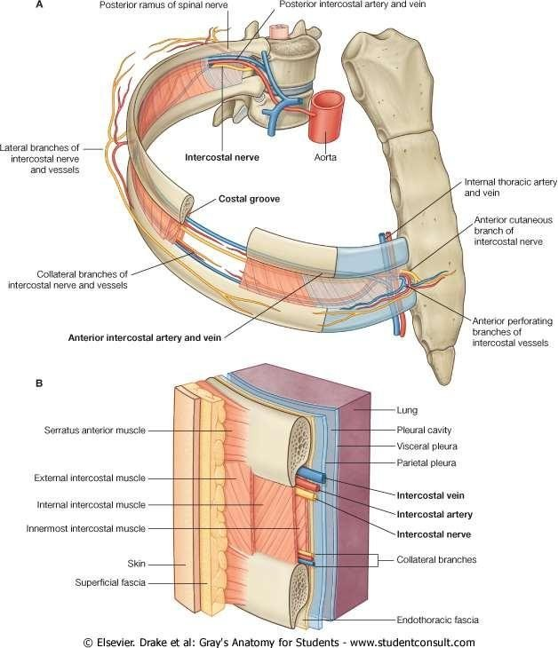
Bu katmanlar, göğüs duvarından iğne ya da tüp geçiren her işlemin haritasıdır. Şekil 3.2 bir interkostal aralığı enine keserek bu haritayı ve VAN dizilimini şematik olarak gösterir.
Slayttaki iki soru: "Nervi intercostales hangi kasları innerve eder?" İnterkostal kasların üçünü (externi, interni, intimi), mm. subcostales'i, m. transversus thoracis'i, m. serratus posterior superior (2-5) ve inferior (9-12, T12 ile birlikte) kaslarını; alttaki sinirler (7-11) ve n. subcostalis ise ayrıca karın ön-yan duvarı kaslarını (m. rectus abdominis, mm. obliqui, m. transversus abdominis) innerve eder. (Mm. levatores costarum istisnadır: arka dallardan sinir alır.) "Kutanöz dalları nerede verir?" Lateral kutanöz dalını orta aksiller çizgi yakınında, anterior kutanöz dalını sternumun yanında (parasternal çizgide) verir. Bu iki dal göğüs ve karın duvarı derisinin sırasıyla yan ve ön kısmını innerve eder.
Sunum tipik bir interkostal sinirin beş dal grubunu sayar (Şekil 3.3):
Sinir bu dalların yanında kostal parietal plevraya (ve alttaki sinirler diyaframın çevresindeki plevra ile periton kısmına) duyu dalları verir. Kostal plevranın ağrısının keskin ve yerinin iyi belirlenebilir olmasının nedeni budur: ağrı, deriyi de innerve eden somatik bir sinirle taşınır (Bölüm 6.6).
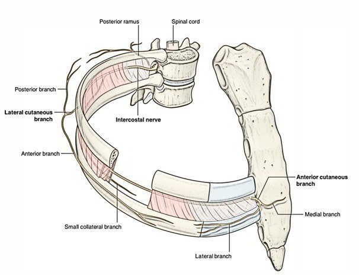
Klinik bağlantılar. (1) Zona (herpes zoster): suçiçeği virüsü ilk enfeksiyondan sonra arka kök gangliyonunda (spinal gangliyon) gizli kalır. Yıllar sonra bağışıklık zayıfladığında yeniden etkinleşir ve gangliyonun duyu lifleri boyunca deriye ilerler. Sonuç, tek bir dermatomu izleyen, gövdenin bir yanında kuşak gibi uzanan, orta hatta duran ağrılı veziküler döküntüdür. Gövde dermatomları en sık tutulan bölgedir. (2) İnterkostal sinir bloğu: kaburga kırığı ya da göğüs cerrahisi ağrısında, lokal anestezik angulus costae yakınında kaburganın alt kenarına, ana sinirin yakınına verilir. Dermatomlar üst üste bindiği için bir üst ve bir alt aralık da bloke edilir (Şekil 3.10 B). (3) İnterkostal nevralji: sinirin seyri boyunca yanan, batan ağrıdır; zona sonrası, cerrahi sonrası ya da kaburga kırığına bağlı olabilir.
Kendi aralığının dışına dal veren interkostal sinirler atipiktir. Sunum özellikle 1. ve 2. sinirleri vurgular:
Sunumun "kısaca" kutusu: NIC I = T1'in küçük alt dalı; NIC II = T2'nin büyük dalı. Kısaltmayı hatırlamak için: T1'in büyük kısmı kola (plexus brachialis), küçük kısmı göğse gider; T2'nin büyük kısmı göğse gider ve yalnızca yan deri dalıyla (n. intercostobrachialis) kola uzanır.
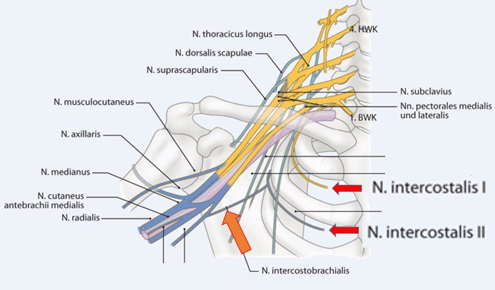
Neden kalp krizi sol kola vurur? Kalbin ağrı lifleri sempatik sinirlerle birlikte omuriliğin T1-T4 segmentlerine girer. Bu segmentlerin somatik deri alanları göğüs ön duvarı ve kolun iç yüzüdür: T1 dermatomu n. cutaneus brachii medialis ile, T2 dermatomu n. intercostobrachialis ile kolun iç yüzüne uzanır. Beyin iç organdan gelen ağrıyı aynı segmentin deri alanına "yerleştirdiği" için miyokard iskemisinin ağrısı göğüs ortasında ve sol kolun iç yüzünde hissedilir. N. intercostobrachialis aksiller lenf nodu diseksiyonunda kolayca zedelenir ve koltuk altı ile kolun iç yüzünde kalıcı uyuşukluk bırakabilir.
Her interkostal aralığa iki taraftan arter gelir: arkadan büyük bir posterior interkostal arter, önden iki küçük anterior interkostal arter. İkisi aralık içinde birleşir (anastomoz). Sunum bu iki sistemi sayılarıyla verir ve sayıların "neden" öyle olduğunu soru işaretiyle vurgular: arkada "12 çift damar olması gerekiyor", önde "9 çift damar olması gerekiyor" (Şekil 3.8).
Her yanda 11 interkostal aralık ve 12. kaburganın altında bir "subkostal aralık" vardır. Bu 12 alanı arkadan besleyen arterler iki farklı kaynaktan gelir:
Neden ilk iki arter aortadan çıkmaz? Aorta thoracica arcus aortae'nın bittiği T4 düzeyinde başlar. İlk iki aralık bu düzeyin üstünde kalır, yani aortanın ulaşamayacağı kadar yüksektedir. Bu aralıkları boyun kökündeki a. subclavia'nın bir dalı besler. Sağdaki posterior interkostal arterler soldakilerden daha uzundur (sunumdaki not). Bunun nedeni aortanın orta hattın solunda inmesidir: sağdaki arterler sağ aralıklara ulaşmak için vertebra gövdelerinin önünü çaprazlamak zorundadır. Bu yolda özofagusun, ductus thoracicus'un, v. azygos'un ve sempatik gövdenin arkasından geçerler.
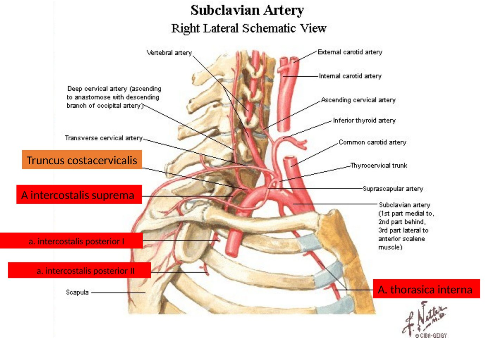
Posterior interkostal arterin dalları (slayt 36):
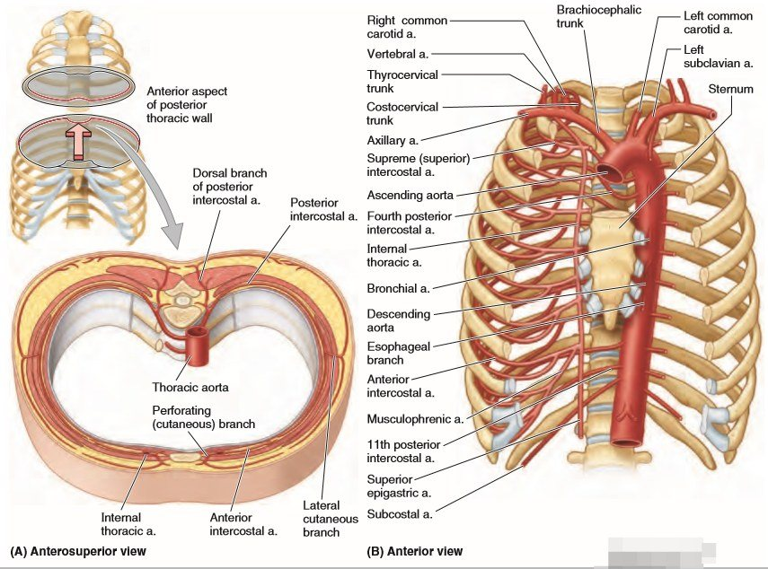
Seyir. Sunuma göre posterior interkostal arter arkada önce plevra ile membrana intercostalis interna arasında ilerler, sonra membranı delerek dış düzleme geçer ve m. intercostalis externus ile membran arasında kısa bir yol alır, angulus costae civarından itibaren de m. intercostalis internus ile intimus arasında, sinirle birlikte sulcus costae içinde seyreder (Şekil 3.7). Klinik açıdan önemli olan, arterin omurgaya yakın kısımda (yaklaşık ilk 6 cm) henüz oluğa girmemiş olması ve aralığın ortasında kıvrılarak ilerlemesidir. Bu yüzden omurgaya yakın girişimlerde arter korunmasızdır.
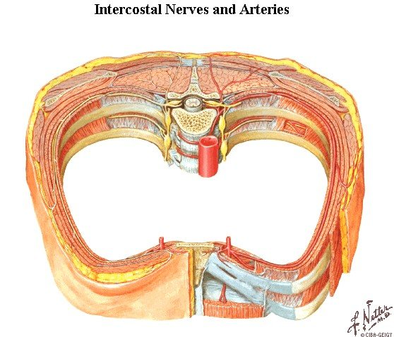
Ön tarafta yalnızca üstteki dokuz aralık anterior interkostal arter alır:
Neden 9? 10. ve 11. aralıklar önde kıkırdakla kapanmaz, yani serbest kaburgaların arasında açık kalır. Bu aralıkları önden besleyecek bir damar yoktur; posterior interkostal arterler bu aralıklarda öne kadar uzanır. Her aralıkta genellikle iki anterior arter bulunur: biri üstteki kaburganın alt kenarında posterior arterle, diğeri alttaki kaburganın üst kenarında kollateral dalla birleşir (sunumdaki iki not: "Aa. intercostales posteriores ile Aa. intercostales anteriores birbirleri ile anastomoz yaparlar" ve "Her interkostal arter birkaç cm ilerledikten sonra alttaki kaburganın üst kenarında seyredecek olan kollateral dal verir").
A. thoracica interna (eski adıyla a. mammaria interna) a. subclavia'nın birinci kısmının alt yüzünden çıkar, üst altı kaburga kıkırdağının arkasından, sternum kenarının yaklaşık 1 cm lateralinden iner ve 6. aralıkta iki uç dalına ayrılır: a. epigastrica superior (Morgagni aralığından rektus kılıfına girer) ve a. musculophrenica (kaburga kavsini izler, 7-9. anterior interkostal arterleri ve diyaframı besler). Yol boyunca a. pericardiacophrenica (n. phrenicus'a eşlik eder), mediastinal ve timik dallar, anterior interkostal arterler ve aralıklardan öne çıkan rr. perforantes (2-4. aralıklardakiler kadında memeye giden medial meme dallarını verir) çıkar. Bu arterin üç klinik önemi vardır:
Diğer damarlar. Sunuma göre ön-yan duvara ayrıca a. thoracica superior ve a. thoracica lateralis gelir. İkisi de a. axillaris'in dalıdır: birincisi üst iki aralığı ve pektoral kasları, ikincisi m. pectoralis minor'un yan kenarı boyunca inerek m. serratus anterior'u, pektoral kasları ve memenin yan kısmını besler (Şekil 3.9).
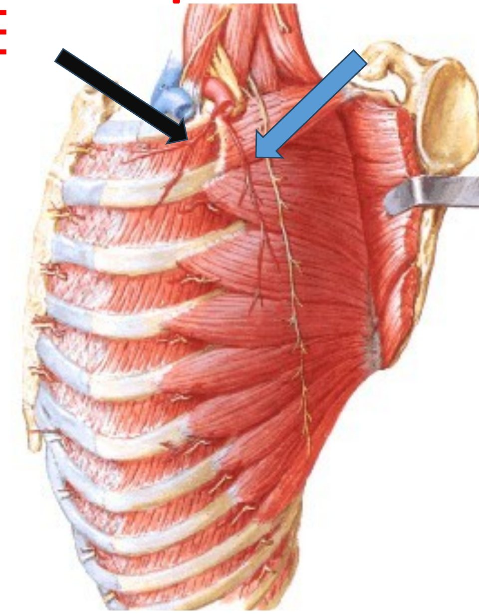
Plevral boşluktaki sıvının iğneyle boşaltılmasına torasentez denir. Sunum bu işlemi tek bir cümleyle ve beş ünlemle vurgular: "Torasentez sırasında interkostal aralığın ortasından yapılması önemli!!!!!" Nedeni Şekil 3.2'de görülür. Bir aralıkta korunması gereken iki damar-sinir grubu vardır: üstte, üstteki kaburganın sulcus costae'sında ana demet (VAN); altta, alttaki kaburganın üst kenarında kollateral dallar. İğne üstteki kaburganın alt kenarına yakın girerse ana arteri ya da siniri, alttaki kaburganın üst kenarına yapışık girerse kollateral dalları yaralayabilir. Güvenli yol, iki demetten de uzak kalan orta kısımdır. Klinik kitaplarda bu kural "iğne alttaki kaburganın üst kenarının biraz üzerinden, kollateral dallardan kaçınacak yükseklikte ilerletilir" diye ifade edilir; iki ifadenin amacı aynıdır.
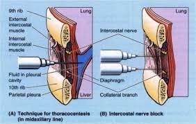
İşlem genellikle hasta oturur ve öne eğilirken, arkada skapular ya da arka aksiller çizgide, sıvının üst sınırının bir-iki aralık altından yapılır. Omurgaya çok yakın girilmez (arter orada henüz oluğa girmemiştir) ve 9. aralığın altına inilmez (diyafram, karaciğer ve dalak yaralanabilir). İğne sırasıyla deri, deri altı, kas katmanları, eksternal, internal ve intimus interkostal kaslar, fascia endothoracica ve parietal plevradan geçer. Şekil 3.10'daki iğnenin 9. aralıktan girip sıvıya ulaşması, orta aksiller çizgide akciğerin alt kenarı 8. kaburgada, plevranın alt kenarı 10. kaburgada olduğu için mümkündür: aradaki kostodiyafragmatik reseste akciğer yoktur, yalnızca sıvı vardır (Bölüm 4.5).
Aort koarktasyonunda arcus aortae'nın bittiği yerde, çoğunlukla a. subclavia sinistra'nın çıkışının hemen distalinde ve lig. arteriosum hizasında bir darlık vardır. Darlığın üstünde basınç yüksek, altında düşüktür. Vücut alt yarısına kan ulaştırmak için kollateral yollar gelişir ve bu yolların en önemlisi göğüs duvarının iki arter sistemi arasındaki anastomozlardır (Şekil 3.11). Sunumun 12 çift-9 çift ayrımı burada bir hastalığın bulgusuna dönüşür: kaburga çentiklenmesi 3-8. kaburgalarda görülür, 1. ve 2. kaburgalar korunur, çünkü bu kaburgaların aralıklarını besleyen posterior arterler aortadan değil, darlığın proksimalindeki a. subclavia'dan (a. intercostalis suprema) gelir. Bu arterlerde akım tersine dönmez ve genişleme olmaz.
Sunuma göre interkostal venler sulcus costae'da interkostal arter ve sinirlere eşlik eder ve en derinde seyreder (VAN dizilimindeki V). Sayıları arterlerinkine uyar: her yanda 11 çift v. intercostalis posterior, 1 çift v. subcostalis ve 9 çift v. intercostalis anterior.
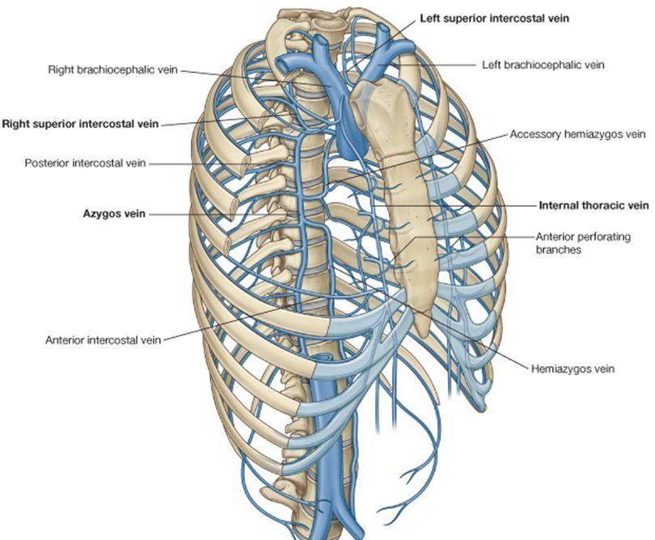
"Azygos" Yunanca "çifti olmayan" demektir: v. azygos, gövdenin iki yanındaki venlerin aksine tek bir vendir ve göğsün arka duvarının kanını toplar. Sunumun tanımı dört cümledir:
V. azygos sağ posterior interkostal venlerin çoğunu (4/5-11), sağ v. intercostalis superior'u, v. hemiazygos'u, v. hemiazygos accessoria'yı, özofagus, mediastinal ve perikard venlerini ve sağ bronşiyal venleri alır.
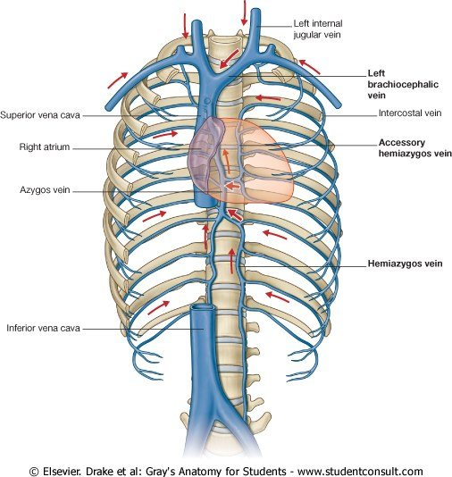
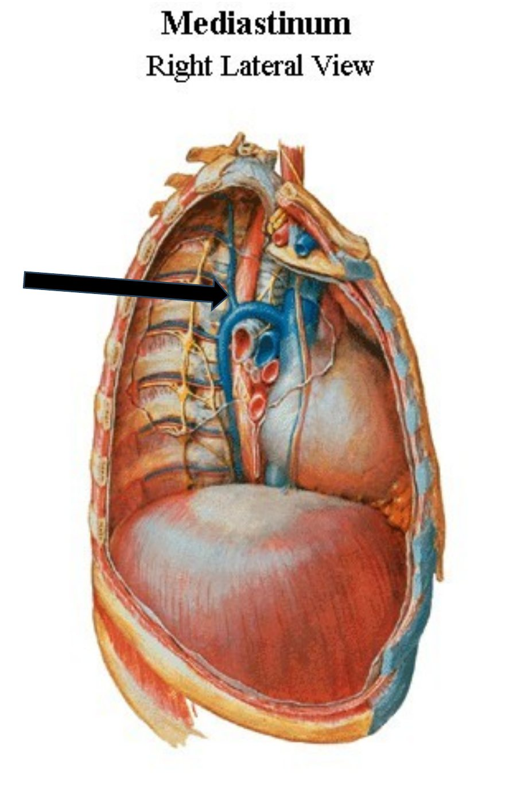
Sol taraf. V. hemiazygos ve v. hemiazygos accessoria v. azygos'un sol taraftaki karşılıklarıdır, ama VCS sağda olduğu için sonunda sağa geçip v. azygos'a dökülmek zorundadırlar:
Yukarıdaki aralıklar. Sunum burada bir soru sorar: "Yukarıda kalan 1-4. interkostal arterler nasıl v. azygos'a açılır?" (Slaytta "arterler" yazılmış olsa da sorulan venlerdir.) V. azygos'un kemeri T4'te olduğu için, kemerin üstünde kalan ilk aralıkların venleri ona doğrudan ulaşamaz. Sunumun verdiği cevap iki yapıdır: v. intercostalis superior ve vv. brachiocephalicae.
Slaytlardaki sorular ve cevapları: "V. azygos nereye açılır?" VCS'ye (T4). "V. hemiazygos ve v. hemiazygos accessoria nereye açılır?" V. azygos'a (sırasıyla T8-T9 ve T7-T8 düzeylerinde sağa geçerek). "Yukarıda kalan 1-4. aralıkların venleri nasıl açılır?" V. intercostalis superior ve vv. brachiocephalicae yoluyla. Ayrıca: v. azygos sağ krustan, v. hemiazygos sol krustan geçer (Bölüm 2.2).
Azygos sisteminin klinik önemi. (1) Kavo-kaval kollateral: v. azygos alt uçta lomber venler yoluyla VCİ sistemine, üst uçta VCS'ye bağlıdır. VCİ tıkandığında alt vücudun kanı lomber venler → azygos sistemi → VCS yoluyla kalbe dönebilir. VCS azygos girişinin altında tıkanırsa bu kez kan baş ve kollardan azygos sistemi aracılığıyla aşağı, VCİ'ye doğru akar. (2) Portosistemik anastomoz: özofagusun alt kısmının venleri hem v. azygos'a (sistemik) hem v. gastrica sinistra'ya (portal) drene olur. Portal hipertansiyonda kan bu yoldan azygos sistemine kaçar ve genişleyen submukozal venler özofagus varislerini oluşturur (Bölüm 7.6). (3) Vertebral venöz pleksus: posterior interkostal venler kapakçıksız vertebral venöz pleksusla (Batson pleksusu) bağlantılıdır. Meme, akciğer ve prostat kanserlerinin vertebralara metastazının yollarından biri budur. (4) Azygos lobu: kişilerin yaklaşık %0,5-1'inde v. azygos gelişim sırasında sağ akciğerin tepesine gömülü kalır ve önündeki plevrayı bir perde gibi içeri çekerek üst lobun tepesinde fazladan bir fissür ve küçük bir "azygos lobu" oluşturur. Bu bir hastalık değil, grafide tanınması gereken bir varyasyondur.
Sunum dört grup sayar (Şekil 3.15):
Göğüs duvarının yüzeyel lenfi (deri ve deri altı) ise göbeğin üstündeki bütün gövde ön ve arka yüzünden olduğu gibi çoğunlukla aksiller düğümlere gider.
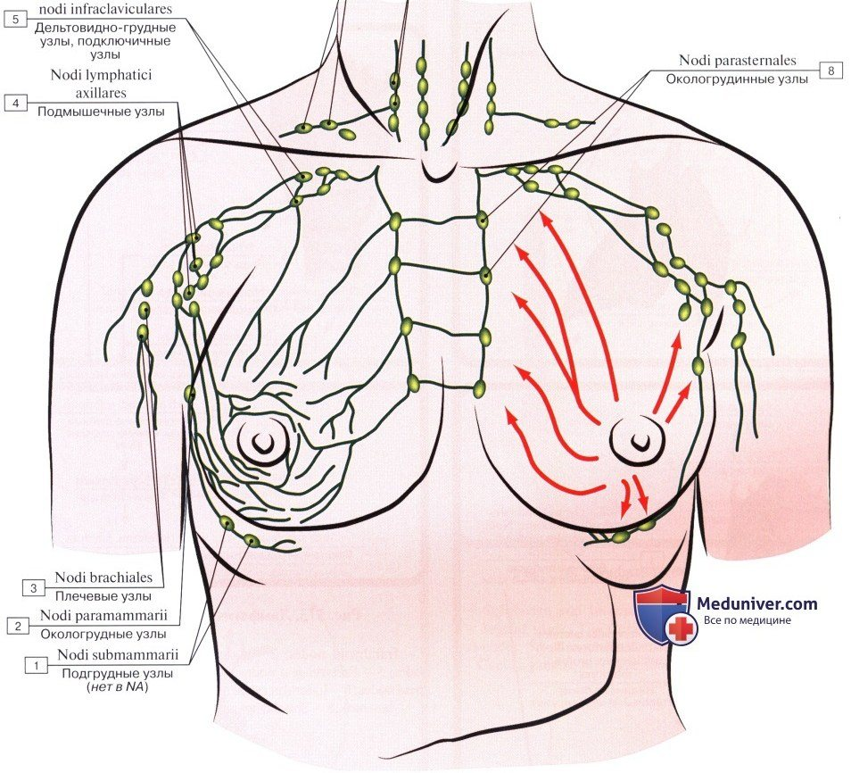
Sunum memeyi ayrı bir başlıkta anlatmasa da göğüs duvarının arterlerini (rr. mammarii laterales) ve lenf düğümlerini (nodi paramammarii) anlatırken ona değinir. Meme ön göğüs duvarının en önemli yumuşak doku organıdır ve anatomisi klinikte doğrudan kullanılır.
Yeri ve katmanları. Meme yüzeyel fasya içinde, dikey olarak 2. ile 6. kaburgalar, enine olarak sternumun yan kenarı ile orta aksiller çizgi arasında uzanır. Tabanının yaklaşık üçte ikisi m. pectoralis major'un, üçte biri m. serratus anterior'un fasyası üzerindedir. Memenin bir uzantısı (processus axillaris, Spence kuyruğu) m. pectoralis major'un alt-yan kenarı boyunca koltuk altına uzanır. Meme ile pektoral fasya arasında gevşek bağ dokusundan oluşan bir aralık (retromammary space) vardır ve memenin göğüs duvarı üzerinde kaymasını sağlar. Bir tümör pektoral fasyaya ulaşırsa bu aralık kapanır: m. pectoralis major kasıldığında meme kasla birlikte hareket eder ve sabitleşir.
Yapısı. Meme bezi 15-20 lobdan oluşur. Her lobun boşaltıcı kanalı (ductus lactiferus) meme başında ayrı bir delikle açılır ve areolanın altında genişleyerek sinus lactiferus'u yapar. Loblar arasındaki fibröz bölmeler dermis ile derin fasya arasında uzanan asıcı bağları (ligg. suspensoria mammaria, Cooper bağları) oluşturur. Bu bağların bir tümörle kısalması deride çöküntü yapar. Tümörün lenf damarlarını tıkaması ise deri altında ödeme yol açar: kıl folliküllerinin ağızları çökük kalır ve deri portakal kabuğu görünümünü alır (peau d'orange). Meme başı (papilla mammaria) erkekte ve genç kadında yaklaşık 4. İKA hizasındadır (T4 dermatomu). Çevresindeki pigmentli areola yağlı salgı yapan areolar bezler taşır.
Damarları. Arterleri a. thoracica interna'nın 2-4. aralıklardan çıkan perforan dalları (medial meme dalları; memenin en önemli kaynağı), a. axillaris'in dalları olan a. thoracica lateralis ve a. thoracoacromialis ve posterior interkostal arterlerin lateral meme dallarıdır (rr. mammarii laterales; sunuma göre 3-5. aralıklar). Venleri çoğunlukla v. axillaris'e, ayrıca v. thoracica interna'ya ve interkostal venlere dökülür. İnterkostal venler yoluyla vertebral venöz pleksusa ulaşılması, meme kanserinin vertebralara ve beyne yayılmasını açıklar.
Lenf drenajı. Memenin lenfinin dörtte üçünden fazlası aksiller düğümlere gider (önce çoğunlukla pektoral grup). Kalanın büyük kısmı, özellikle iç kadranlardan, parasternal düğümlere drene olur. Bir kısmı karşı memeye ve karın düğümlerine ulaşabilir. Klinikte aksiller düğümler m. pectoralis minor'a göre üç düzeyde incelenir: kasın lateralindekiler düzey I, arkasındakiler düzey II, medialindekiler düzey III. Tümörden lenfin ilk ulaştığı düğüm "sentinel" (bekçi) düğümdür ve cerrahide boya ya da radyoaktif işaretle bulunur. Memenin en çok bez dokusu içeren üst-dış kadranı, kanserlerin de en sık görüldüğü yerdir.
Siniri. Memenin derisi ve bezi 4-6. interkostal sinirlerin ön ve yan deri dallarından duyu ve sempatik lif alır. Meme başının yoğun duyusal innervasyonu emzirme refleksinin afferent koludur.
Cerrahi riskler. Aksiller lenf nodu diseksiyonunda üç sinir tehlikededir: n. thoracicus longus (m. serratus anterior felci, kanatlı skapula), n. thoracodorsalis (m. latissimus dorsi) ve n. intercostobrachialis (koltuk altı ve kol iç yüzünde uyuşma). Lenf yollarının çıkarılması koldan gelen lenfin akışını engeller ve kolda kalıcı şişlik (lenfödem) yapabilir. Bu durum Modül 3'ün hemodinamik konusunda ödem tiplerinin bir örneği olarak soruldu (2019 S51: cerrahi aksiller lenf nodu diseksiyonu sonrası gelişen ödem tipi, cevap: lenfödem).
Doğru: B. Dizilim VAN kısaltmasıyla hatırlanır: en üstte ve oluğun en derininde ven, ortada arter, en altta sinir. Sinir oluğun alt kenarından taşar ve kaburganın koruması en az olan yapıdır.
A, C, D ve E bu sırayı değiştirir. Özellikle A (arter en üstte) sık yapılan bir hatadır; sunumun ifadesiyle venler "en derinde seyreder", sinir ise "arterin altında" seyreder.
Doğru: A. İlk iki aralık aorta thoracica'nın başladığı T4 düzeyinin üstünde kalır. Bu aralıkları a. subclavia'nın truncus costocervicalis'inden çıkan a. intercostalis suprema besler.
B yanlış: aorta thoracica 3-11. posterior interkostal arterleri ve a. subcostalis'i verir. C yanlış: a. thoracica interna 1-6. anterior interkostal arterleri verir. D yanlış: a. musculophrenica 7-9. anterior interkostal arterleri verir. E yanlış: a. thoracica lateralis a. axillaris'in dalıdır ve göğsün yan duvarını, m. serratus anterior'u ve memenin yan kısmını besler.
Doğru (yanlış ifade): D. 10. ve 11. aralıklarda anterior interkostal arter yoktur. Bu aralıklar önde kıkırdakla kapanmaz; posterior interkostal arterler bu aralıklarda öne kadar uzanarak bölgeyi besler. A. epigastrica superior rektus kılıfına girer ve aralıklara dal vermez.
A doğru: 11 posterior interkostal arter ve a. subcostalis. B doğru: 1-9. aralıkların anterior arterleri. C doğru: 1-6 a. thoracica interna'dan, 7-9 a. musculophrenica'dan çıkar. E doğru: aorta orta hattın solunda indiği için sağ arterler vertebra gövdelerini çaprazlamak zorundadır.
Doğru: C. 2. interkostal sinir (T2'nin büyük dalı) atipiktir, çünkü lateral kutanöz dalı olan n. intercostobrachialis koltuk altını geçerek kolun iç yüzünün derisine uzanır. Kalp ağrısının kola yansıması ve aksiller diseksiyon sonrası kol iç yüzündeki uyuşukluk bu sinirle ilgilidir.
A yanlış: 1. interkostal sinir T1'in küçük alt dalıdır ve çoğu zaman ön deri dalı vermez. B yanlış: fasciculus medialis kolun iç yüzüne n. cutaneus brachii medialis'i verir; n. intercostobrachialis onunla birleşir ama ondan çıkmaz. D yanlış: T1'in büyük üst dalı plexus brachialis'e katılır. E yanlış: 4. sinir tipik bir interkostal sinirdir ve ön deri dalı göğüs ön duvarına (meme başı çevresi) dağılır.
Doğru: E. Bir interkostal aralıkta iki damar-sinir grubu vardır: üstte, sulcus costae'da ana demet (VAN); altta, alttaki kaburganın üst kenarında kollateral dallar. İğne her ikisinden de uzak kalmak için aralığın ortasından girer.
A yanlış: aralığın her yerinde interkostal kaslar vardır; iğne bu kasları geçer. B yanlış: kostal parietal plevra her yerinde ağrıya duyarlıdır (interkostal sinirler); bu yüzden işlemde lokal anestezi plevraya kadar yapılır. C yanlış: a. thoracica interna aralıkların ön ucunda, sternumun yanında dikey iner; yan ya da arka duvardan yapılan torasentezin yolunda değildir. D yanlış: akciğer plevraya yapışık değildir; iki plevra yaprağı arasındaki boşlukta sıvı vardır ve işlemin amacı bu sıvıya ulaşmaktır.
Doğru (yanlış ifade): D. Sol 9-11. posterior interkostal venler ve sol v. subcostalis önce v. hemiazygos'a dökülür. V. hemiazygos T8-T9 düzeyinde aortanın, özofagusun ve ductus thoracicus'un arkasından sağa geçerek v. azygos'a açılır. Yani bu venler v. azygos'a doğrudan değil, dolaylı olarak ulaşır.
A, B ve C sunumun v. azygos tanımıdır. E doğrudur: iki sol ven de sonunda v. azygos'a dökülür.
Doğru: A. Azygos kemerinin (T4) üstünde kalan aralıkların venleri ona doğrudan ulaşamaz. Sol 2-3. venler birleşerek v. intercostalis superior sinistra'yı oluşturur; bu ven arcus aortae'nın sol yanını n. phrenicus ile n. vagus arasından çaprazlayarak sol v. brachiocephalica'ya açılır.
B yanlış: v. hemiazygos alttaki venleri (9-11) toplar. C yanlış: v. thoracica interna anterior interkostal venleri alır. D yanlış: v. hemiazygos accessoria 4/5-8. venleri toplar ve VCİ'ye değil v. azygos'a dökülür. E yanlış: sol taraftaki hiçbir posterior interkostal ven v. azygos'a doğrudan açılmaz; sağdaki karşılıkları ise sağ v. intercostalis superior üzerinden azygos kemerine açılır.
Doğru: C. Kaburga çentiği, kollateral yoldaki posterior interkostal arterlerin ters yönde akan kanla genişleyip kıvrılarak kaburganın alt kenarını aşındırmasıdır. Bu ters akım ancak darlığın distalinde aortadan çıkan arterlerde olur. İlk iki aralığın arterleri darlığın proksimalindeki a. subclavia'dan çıktığı için bu arterlerde ters akım ve genişleme yoktur.
A yanlış: 1. ve 2. kaburgaların da damar-sinir demetine komşu kenarları vardır; sorun oluğun varlığı değil arterin kaynağıdır. B yanlış: klavikula kaburgayı darbeden korur, iç taraftan gelen arter basıncından değil. D yanlış: 1-6. aralıklarda anterior interkostal arter vardır (a. thoracica interna'dan); 10-11. aralıklarda yoktur. E yanlış: kıkırdak kalsifikasyonu ön uçlarda olur ve çentiklenmeyle ilgisi yoktur.
Doğru: E. Tablo zonadır. Suçiçeği-zona virüsü duyu nöronlarının hücre gövdelerinin bulunduğu arka kök gangliyonunda latent kalır. Yeniden etkinleşince o gangliyonun duyu lifleri boyunca deriye ilerler; döküntü bu yüzden tek bir dermatomu izler ve orta hatta durur.
A yanlış: ön boynuzda motor nöronlar vardır; virüs onları nadiren tutar. B yanlış: sempatik gangliyonlar postganglionik otonom nöronları içerir, deri dermatomuyla eşleşmez. C yanlış: kollateral dal bir sinir dalıdır, nöron gövdesi taşımaz. D yanlış: yan boynuzda preganglionik sempatik nöronlar bulunur.
Doğru: B. Memenin lenfinin dörtte üçünden fazlası aksiller düğümlere (önce çoğunlukla pektoral grup) gider. İç kadranların lenfi a. thoracica interna boyunca dizilen parasternal düğümlere de ulaşır.
A yanlış: parasternal düğümler lenfin küçük bir kısmını alır. C yanlış: lenf karşı memeye ve karın düğümlerine de ulaşabilir. D yanlış: aksiller düzeyler m. pectoralis minor'a göre belirlenir (lateralinde I, arkasında II, medialinde III). E yanlış: sentinel düğüm çoğunlukla aksillada bulunur; tümörün lenfinin ilk ulaştığı düğüm olduğu için yeri tümörün yerine göre değişir.